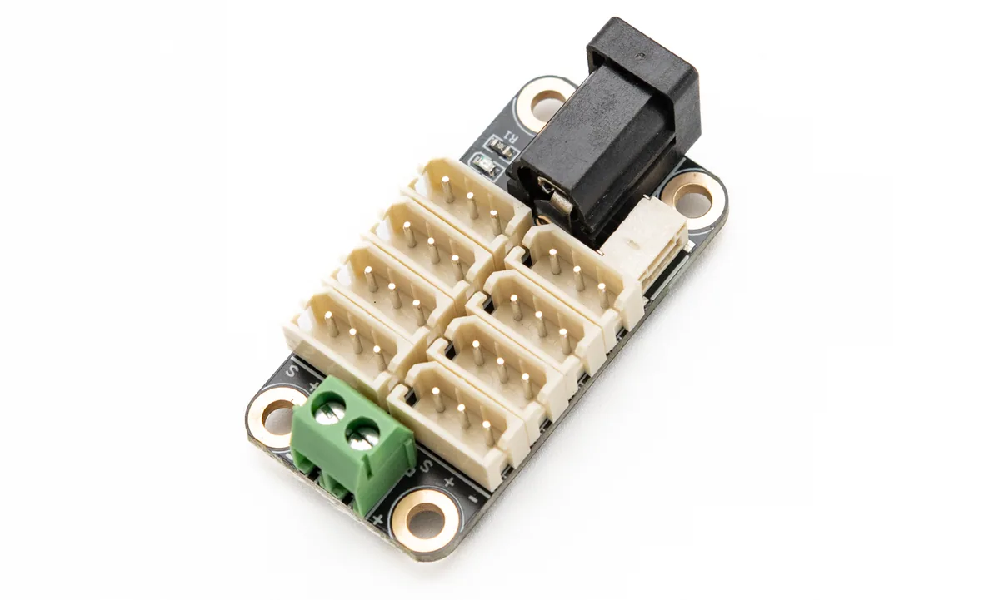
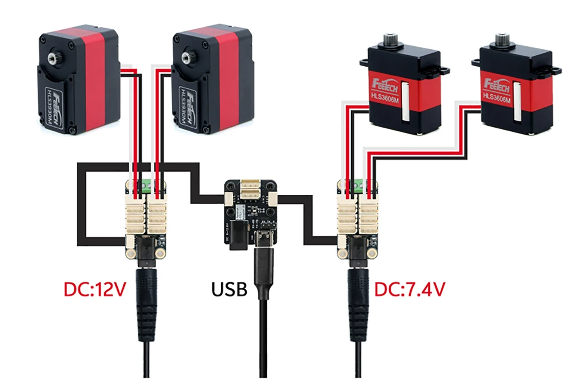
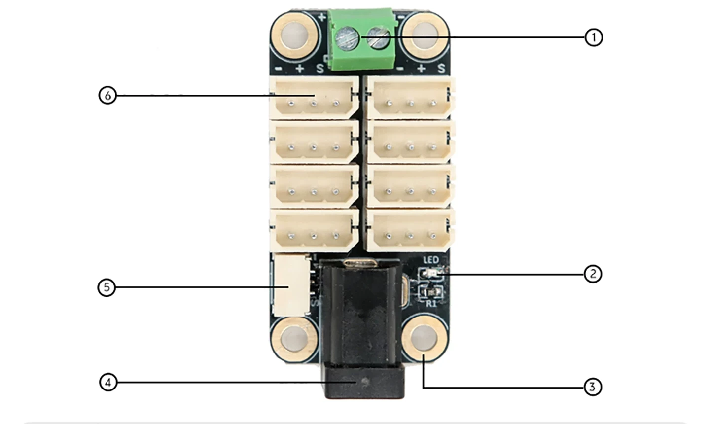
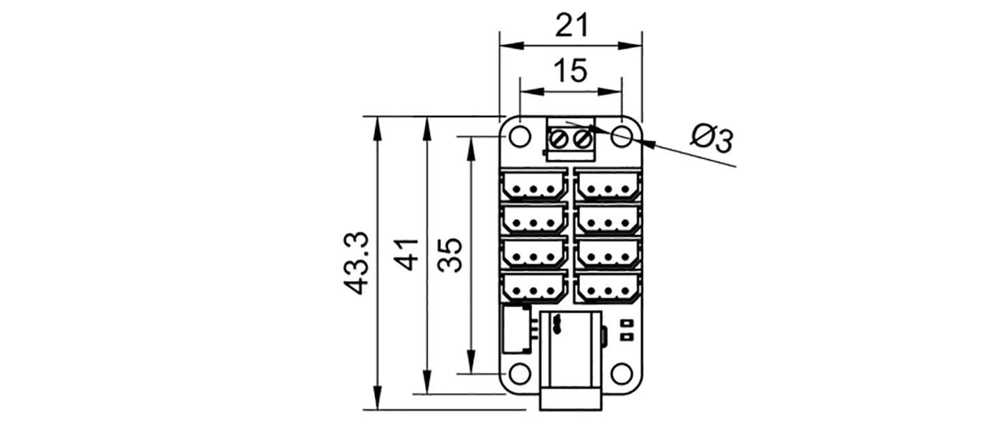
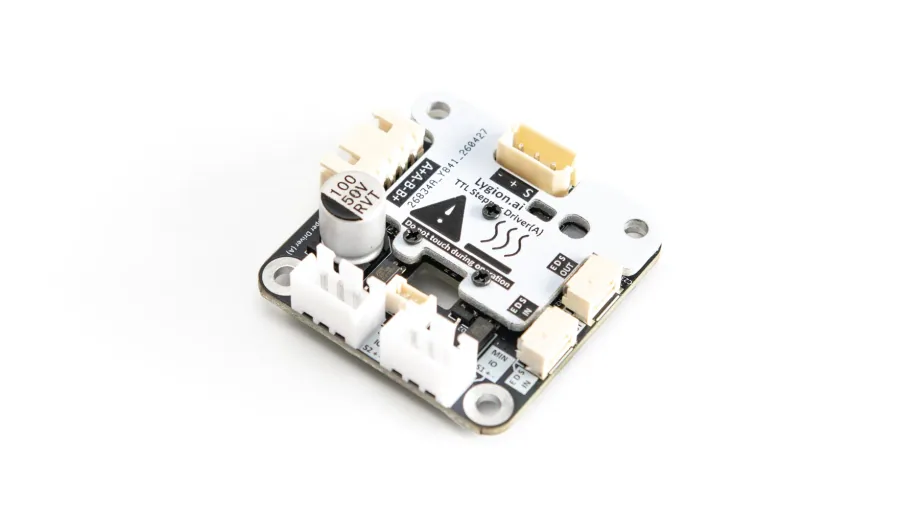
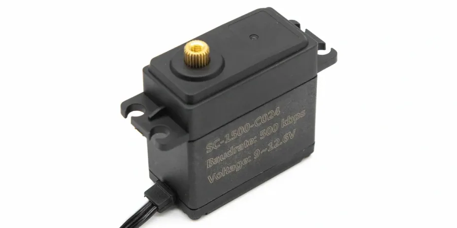
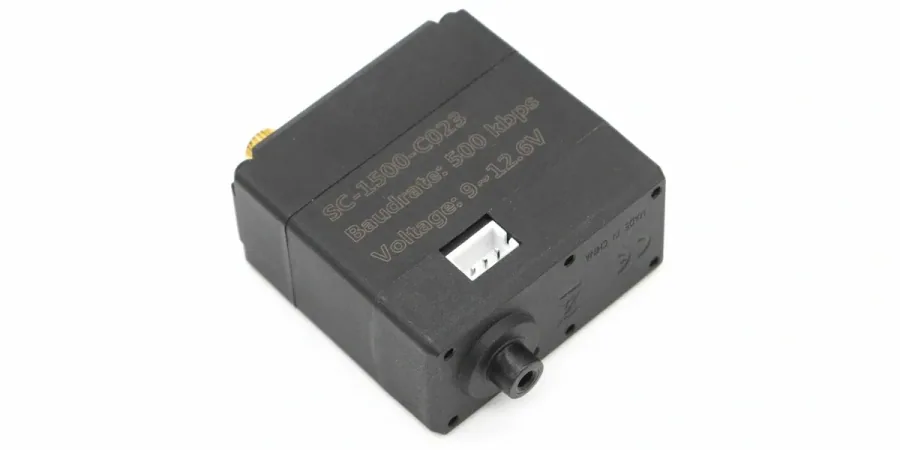
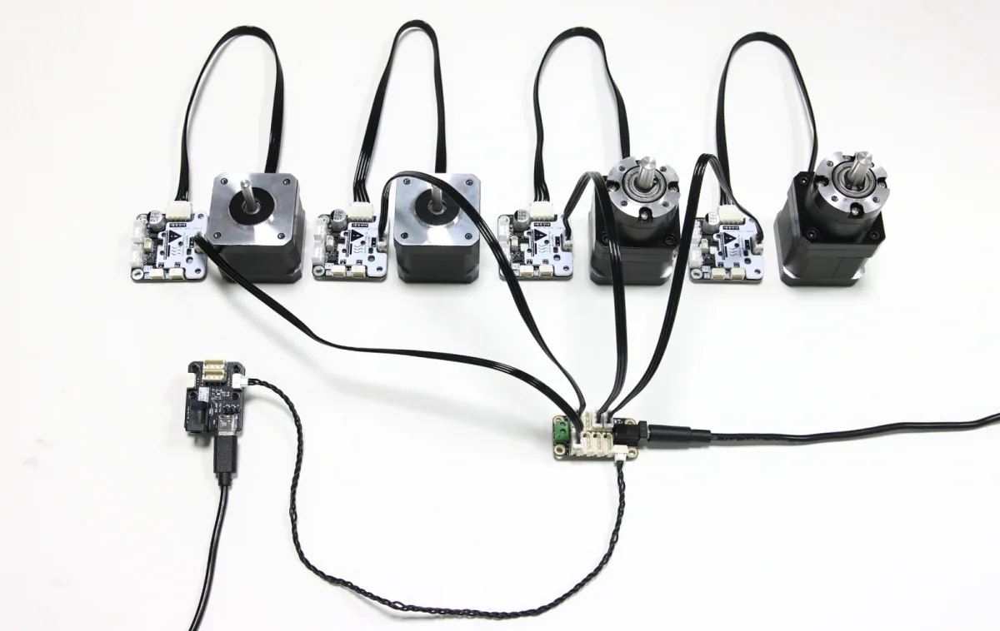
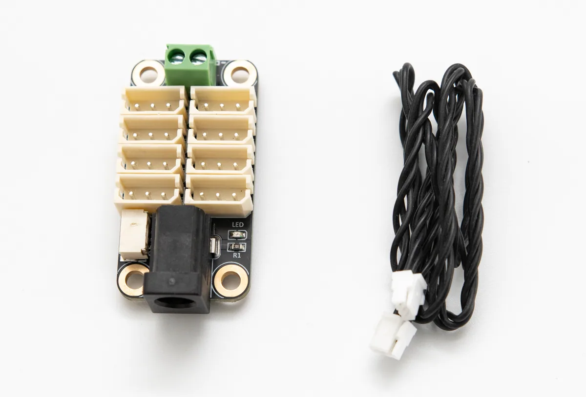

Centralized ports
Eight 5264-3P connectors keep growing systems organized instead of turning them into a bundle of adapters.
One bus, multiple devicesTTL BUS HUB
A compact distribution board for 5264-3P TTL devices. It combines bus fan-out, power distribution, and practical mounting in one board, making multi-device systems easier to wire and expand.

WHY THIS HUB
Robots often combine TTL devices with different power requirements on the same control bus. The TTL-5264 8P Hub (A) leaves the communication protocol untouched while distributing bus signals and power across eight 5264-3P ports in a compact, installation-friendly format.
Eight 5264-3P connectors keep growing systems organized instead of turning them into a bundle of adapters.
One bus, multiple devicesAt just 44 x 21mm, the board fits quadrupeds, hexapods, robot arms, and other tight assemblies.
Made for limited spaceParallel hubs let each servo or actuator group use the supply voltage that suits it while sharing the same data bus.
Supports power grouping and isolationA DC5521 jack and screw terminal provide convenient options for bringing power onto the board.
Fewer wiring adaptersPOWER GROUPING
Connect multiple hubs in parallel to place devices with different voltage requirements on one communication bus. Each hub can be powered from a supply matched to its own device group. In the example, one group runs at 12V and the other at 7.4V, with no shared power rail between them.


ONBOARD RESOURCES
DIMENSIONS
The board is 21mm wide and 41mm long, or approximately 43.3mm including the protruding connector. Four 3mm mounting holes use 15mm horizontal and 35mm vertical spacing.

COMPATIBLE DEVICES
Designed for TTL bus hardware with HX5264-3P connectors, including LYGION bus products and compatible Feetech STS, HLS, and SCS series servos.




BUS SYSTEM
Use the hub in robot systems that mix drivers, encoders, and servos. Once the devices share a bus, the host communicates with each one by device ID through a USB or UART interface.
SPECIFICATIONS

IN THE BOX
SUPPORT
Find wiring instructions, development resources, and system design guidance in the English LYGION Wiki.